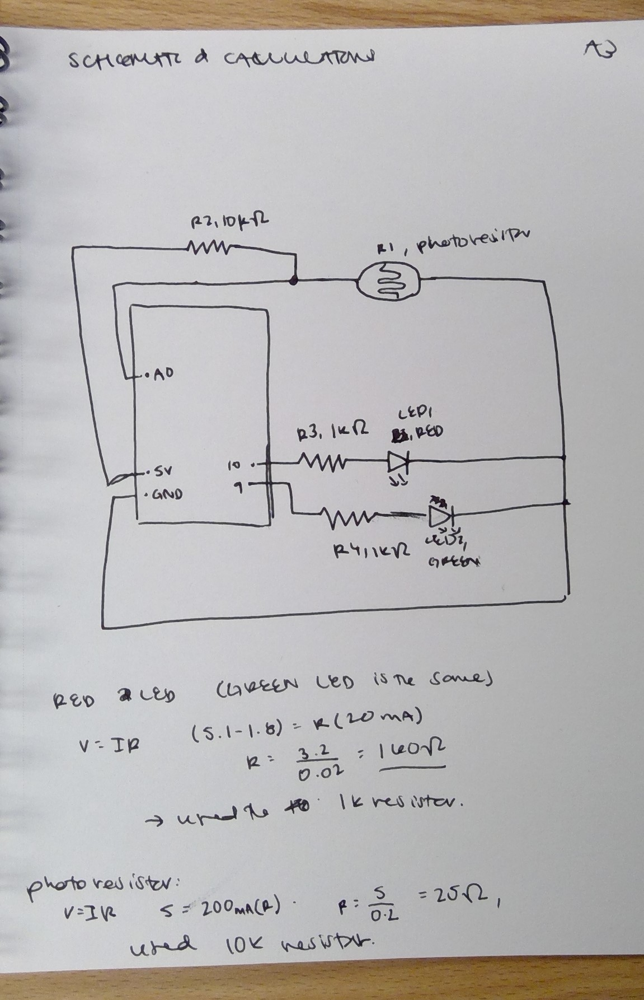

Maike's Assignment 3!
My program switches between turning on a red LED and a green LED depending on how much light the photoresistor reads.


Schematic:
I discovered what values to read at the voltage divider through trial-and-error. I eventually found that 900 was a good middle value, and in my code I set that as the greater than/less than value to determine which LED goes off.
Here is all the documentation for assignment 3!
Here is my code:
const int analogInPin = A0; // Analog input pin that the photoresistor is attached to
const int redPin = 10; // Analog output pin that the LED is attached to (red LED)
const int greenPin = 9; // Analog output pin that the Green LED is attached to.
int sensorValue = 0; // value read from the photoresistor
int outputValue = 0; // value output to the PWM (analog out)
void setup() {
// initialize serial communications at 9600 bps:
Serial.begin(9600);
pinMode(redPin, OUTPUT); // set red led pin 10 as output.
pinMode(greenPin, OUTPUT); // set green led pin 9 as output.
pinMode(analogInPin, INPUT); // set analog in pin as input
}
void loop() {
// read the analog in value:
sensorValue = analogRead(analogInPin);
// map it to the range of the analog out:
outputValue = map(sensorValue, 0, 1023, 0, 255);
if (sensorValue < 900) { // 900 seems to be the average sensor value. If less than 900, the red pin will activate.
analogWrite(redPin, outputValue); //map redpin to the output value
analogWrite(greenPin, 0); // turn off red led.
Serial.println("Red Pin"); // print "Red Pin" to serial
Serial.println(sensorValue); // print the sensor value to serial
}
if (sensorValue >= 900){ // if sensor value is greater than or equal to 900, the green pin will activate.
analogWrite(greenPin, outputValue); //map green pin to the output value
analogWrite(redPin, 0); // turn off red led.
Serial.println("Green Pin"); // print "Green Pin" to serial.
Serial.println(sensorValue); // print the sensor value to serial.
}
// wait 2 milliseconds before the next loop for the analog-to-digital
// converter to settle after the last reading:
delay(2);
}